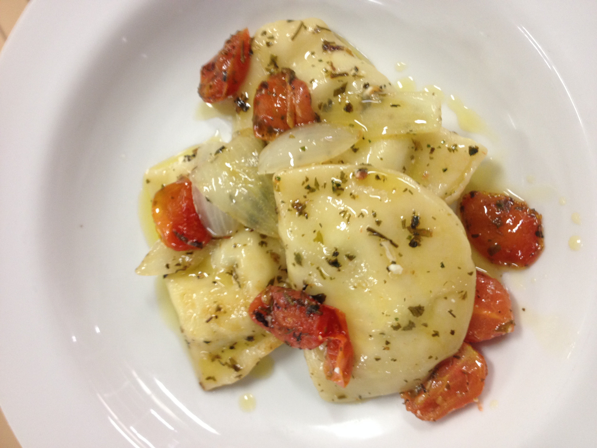
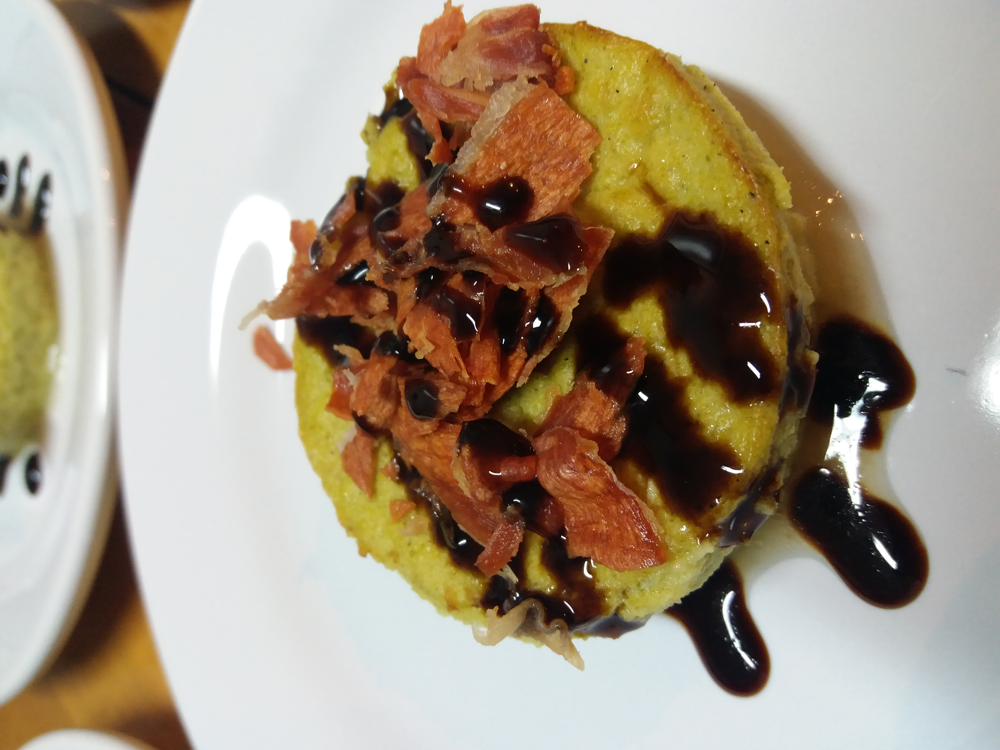
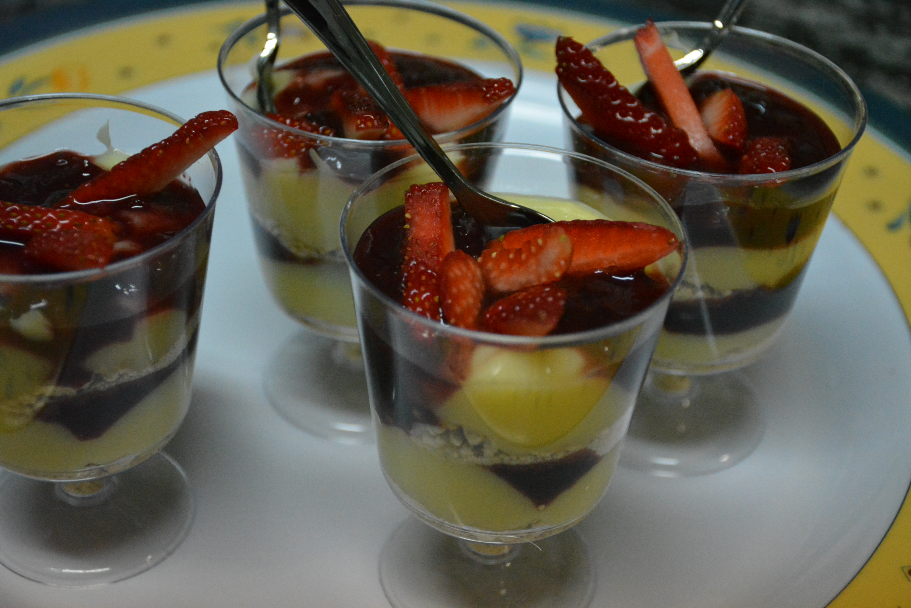

Cozinhar além de um hobby já foi uma prfissão minha, me graduei em gastronomia e me especializei em gastronomia autoral. Tendo aulas com alguns dos melhores chefs do Brasil e do mundo.
Fui líder de turma, na minha carreira, comecei cozinheiro e fui da minha própria cozinha. Antes da pandemia, trabalhava com eventos de alta gastronomia para públicos seletos. Porém com as restrições que foram estabelecidas devido a quarentena do COVID-19, tive que parar meus trabalhos. Fiquei aproximadamente um ano impedido de trabalhar, e foi nesse momento que decidi que era hora de mudar.
Gosto de todo tipo de comida e adoro usar fogo no preparo. Tem algo meio místico sobre esse elemento que me atrai muito. Sou bom com massas, carnes e molhos, mas não tenho uma especialidade, sou generalista quando falo de receitas.
Acho que a cozinha é uma das maiores representações de cultura de um povo, uma sociedade, ou até mesmo de um local. E issa faz ela algo único. É triste que muitas pessoas vêem o ato de comer apenas como algo trivial e uma forma de nos abastecer de energia. Acredito que se as pessoas olhassem para a comida com outros olhos, talvez percebessem que está ligada a base de tudo. Sem ela não teríamos evoluído ao que somos hoje.



Vídeo de receita do meu canal do youtube.